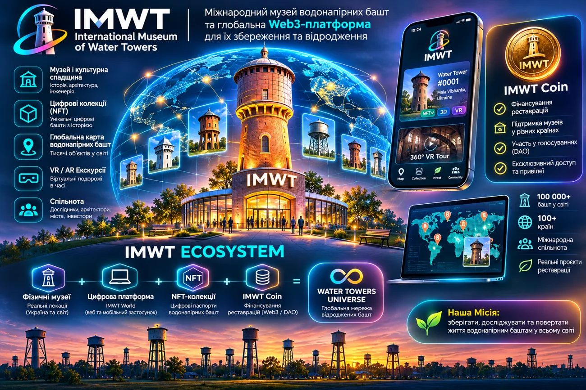

Discover
Find water towers even when their history lives only in the memories of local residents.
A GLOBAL MUSEUM INITIATIVE · UKRAINE
Every water tower embodies an engineering breakthrough, architectural identity, and generations of memories. IMWT connects them in an open digital museum accessible to everyone.
01 / OUR BIG IDEA
We usually tell civilization’s story through palaces, temples and bridges. Yet water towers shaped everyday life too: they helped cities expand, industries operate and communities access reliable water supplies.
IMWT studies this engineering legacy, its impact on cities and society, and the tower as an early symbol of complex urban networks. Direct links to later technologies are research questions, not established historical conclusions.
Find water towers even when their history lives only in the memories of local residents.
Collect documents, plans, memories, technologies and the names of their creators.
Make knowledge accessible and help communities imagine a new future for their towers.
02 / DIGITAL ATLAS
An open digital encyclopedia envisioned for towers from different countries, periods and construction traditions. For now, this is a visual prototype.
03 / A GLOBAL RESEARCH PROGRAM
For every tower, we want to understand far more than its address and construction date: we want to tell its fullest possible story.
Tanks, hydraulics, pressure, materials, equipment, structural systems and upgrades.
Attribution, plans, design schools, builders and the history of engineering creativity.
Local names, oral testimony, myths, family photographs and cultural context.
Restoration, adaptive reuse, museums and sustainable preservation models.

CONCEPT VISUALIZATION · NOT AN AS-BUILT PHOTO04 / STARTING IN UKRAINE
A historic water tower in Mala Vilshanka, Kyiv region, will be IMWT’s starting point: the site of the first exhibition, pilot research and experimentation with digital museum formats.
The site is being prepared for future development. Public opening is subject to surveys, design reviews and all necessary approvals.
05 / CONTRIBUTE TO THE WORLD ATLAS
Residents, architects, researchers, owners, companies and municipal authorities can propose an object for the international research archive. No registration. No fee.
Its name, location, approximate age, condition and memorable details.
Photographs, scans, documents or a shared archive link.
Our team checks sources and may contact you. Submission does not mean automatic publication.
You can upload up to three files totaling 8 MB per submission. For larger collections, share a cloud-folder link. Do not submit sensitive operational plans or personal data without authorization.
06 / PARTNERSHIPS & SUPPORT
We invite philanthropists, foundations, businesses, museums, universities, municipalities and communities to collaborate. Help build a global open knowledge base and support the future preservation of towers.
07 / ROADMAP
Website, public submissions, international outreach and organizational setup.
Documentation standards, source verification, pilot catalog and digital exhibitions.
Design work, safety assessments and phased exhibition development in Mala Vilshanka.
Collaboration with cities, museums and researchers, plus heritage preservation programs.
08 / KEY DOCUMENT
The research concept, a digital encyclopedia of the world’s engineering heritage, and the museum’s development program — in one open document.
Inside the document
A strategic document for discussion. No NFTs, cryptocurrencies, tokens or investment offers.
One photograph, one document or one memory can start a major discovery.
Submit a water tower ↗